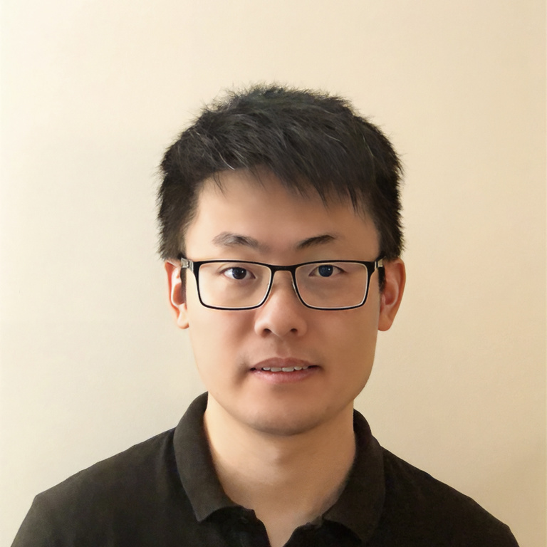

|
 |
I am an Associate Professor in the Department of Electrical and Computer Engineering at the University of Florida. I received my Ph.D. (2019) and B.A.Sc. (2014) degrees from the University of British Columbia (UBC), Canada. My doctoral dissertation received the SPEC Kaivalya Dixit Distinguished Dissertation Award, and I was subsequently awarded the NSERC Postdoctoral Fellowship. Prior to my faculty career, I was a Postdoctoral Scholar at the University of Illinois Urbana–Champaign (UIUC) in 2020. Broadly speaking, my research focuses on data reduction and fault tolerance for high-performance computing (HPC) and artificial intelligence (AI) systems. My work has been recognized with Best Paper Awards and Best Paper Finalist distinctions at multiple premier venues, including LDAV, ICS, SC, DSN, and ISSRE, in 2025, 2024, 2023, 2022, 2021, 2020, and 2018. In addition, I am the recipient of the NSF CAREER Award (2025), the Google Academic Research Award (2024), and the IEEE Computer Society TCHPC Early Career Researchers Award for Excellence in High-Performance Computing (2024).
Email: liguanpeng [at] ufl [dot] edu |
Multiple Ph.D. student positions are available in my research group. Internship opportunities are open to UF students only.
The University of Florida is ranked #6 among U.S. public universities and #30 overall, according to U.S. News & World Report.
Educational Background
Postdoc, University of Illinois Urbana-Champaign (2020)
PhD, Univrsity of British Columbia (2019)
BASc, Univrsity of British Columbia (2014)
Research Interests
HPC Fault Tolerance
Lossy Compression
AI Dependebility
Safety of Autonomous Driving Systems
News
-
[Feb, 2026] Two papers accepted to ICS'26.
-
[Dec, 2025] Zhengyang has successfully completed his Ph.D. and joined TU Wien. Congratulations, Dr. He!
-
[Nov, 2025] Will serve on PC of SC'26. Submit your best papers.
-
[Sep, 2025] One paper accepted to NeurIP'25.
-
[Sep, 2025] Will serve on PC of ICS'26 and HPDC'26.
-
[Sep, 2025] Will server on PC of DSN'26.
-
[Jun, 2025] Three papers accepted to SC'25.
-
[Feb, 2025] Our ICS paper on GPU lossy compression has been nominated for the Best Paper Award.
-
[Nov, 2024] Honored to receive the NSF CAREER Award. Thank you, NSF!
-
[Aug, 2024] Honored to receive IEEE Computer Society TCHPC Early Career Researchers Award for Excellence in High-Performance Computing.
-
[Jul, 2024] Honored to receive the Google Academic Research Award. Thank you, Google!
... ...